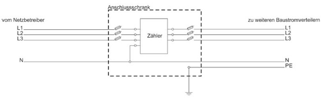
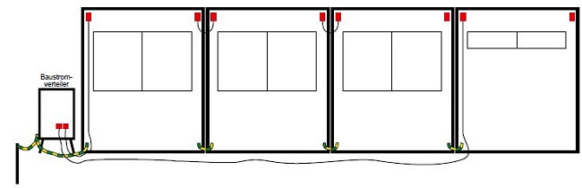
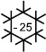

Abb. 9 Baustromverteiler mit Festanschluss
Abb. 10 Baustromverteiler mit Gerätestecker
Die Anlage zur elektrischen Energieversorgung einer Bau- oder Montagestelle besteht aus Übergabepunkt, Verbindungsleitungen, Verteilern, Schutzeinrichtungen und Anschlusspunkten.
Als Netzsysteme sind nach dem Übergabepunkt TN-C-, TN-S-, TT- und IT-Systeme zulässig.

Abb. 2 Versorgung einer größeren Baustelle (Anschluss-, GruppenVerteiler-, GroßGeräte-Verteiler-, Verteiler-, EndVerteiler-Schrank)

Abb. 3 Versorgung einer kleineren Baustelle mit nur einem AnschlussVerteiler-Schrank

Abb. 4 Beispiel für eine fachgerechte und zuverlässige Ausführung der Erdung
Das TN-C-System darf nur angewendet werden, wenn Leitungsquerschnitte von mindestens 10 mm² Cu oder 16 mm² Al verwendet werden. Die Leitungen dürfen während des Betriebes nicht bewegt werden und sind mechanisch geschützt zu verlegen. Leitungen gelten als geschützt verlegt, wenn sie hochgelegt sind (Kabelbrücke) oder durch ein Schutzrohr oder in einer ausreichend tragfähigen Konstruktion (Überfahrschutz) mechanische Schädigungen verhindert werden.
Im TN-System sollten zur Gewährleistung einer sicheren Erdverbindung möglichst alle Baustromverteiler zusätzlich geerdet werden, z. B. durch Erdspieße.
Im TT-System muss zur Einhaltung der Abschaltbedingungen die Erdverbindung ausreichend niederohmig sein. Dazu ist jeder Baustromverteiler separat zu erden. Um die Schutzmaßnahme dauerhaft sicherzustellen, ist insbesondere bei der Verwendung von Erdspießen auf eine fachgerechte und zuverlässige Ausführung der Erdung zu achten.
In der Nähe von elektrifizierten Gleisanlagen sind die Erdspieße aufgrund von Rückströmen im Erdreich in einem ausreichenden Abstand (ca. 10 m) von den Gleisanlagen zu setzen.
Für die elektrische Anlage einer Baustelle ist, in der Regel am Übergabepunkt aus dem vorgelagerten Netz, ein Anschluss an eine Erdungsanlage vorzusehen. Als Haupterdungsschiene wird in der Regel die PE-Schiene im Anschlussschrank verwendet. Hier werden der PE- bzw. PEN-Leiter der Zuleitung, der Schutzleiter der abgehenden Leitung und der Erdungsleiter zum Erder angeschlossen.
Des Weiteren sind die TAB (Technische Anschlussbedingungen) der Netzbetreiber zu beachten.
Die Anschlüsse an Erdungsschienen müssen zuverlässig ausgeführt und dürfen nur mit Hilfe eines Werkzeugs lösbar sein.
Der Anschluss eines Erdungsleiters an einen Erder muss fest und elektrisch zuverlässig ausgeführt werden. Die Verbindung muss durch Schweißen, Pressverbinder, Klemm- oder andere mechanische Verbinder hergestellt werden.

Abb. 5 TN-C-System – Aufteilung des PEN in TN-C-S erfolgt im Anschluss-Schrank

Abb. 6 TN-C-System – Aufteilung des PEN in TN-C-S kann auch im nachgelagerten Netz der Baustelle erfolgen

Abb. 7 TT-System – die Niederohmigkeit der Erdverbindung ist sicherzustellen
Bei der Errichtung einer Erdungsanlage ist im Rahmen der Inbetriebnahmeprüfung nach VDE 0100-600 die Niederohmigkeit des Erderwiderstands nachzuweisen.
Der Schutzpotentialausgleichsleiter für die Verbindung zur Erdungsschiene muss einen Mindestquerschnitt haben von nicht weniger als
Unabhängig vom Leitermaterial sollte aus Gründen der mechanischen Belastbarkeit auf Baustellen der Querschnitt von Schutzpotentialausgleichsleitern für die Verbindung mit der Erdungsschiene mindestens 16 mm² betragen.
Für eine Gruppe von mindestens zwei nebeneinander aufgebauten Baustellencontainern, von denen mindestens einer elektrisch angeschlossen ist, ist in Anlehnung an DIN 18014 eine Erdungsanlage vorzusehen. Diese kann mittels Stab-, Tiefen- oder Ringerder ausgeführt werden. Dieser Erder ist in der Regel über den Erdungsleiter mit der Haupterdungsschiene (PE-Schiene des/der versorgenden Baustromverteiler) zu verbinden.
Von der Haupterdungsschiene ist ein Schutzpotentialausgleichsleiter an einen (ersten) Baustellencontainer mit mindestens 16 mm² anzuschließen. Alle Container sind zusätzlich untereinander mittels Schutzpotentialausgleichsleiter mit mindestens 16 mm² zu verbinden.

Abb. 8 Baustellencontainer – Erdung und Schutzpotentialausgleich (hier grün-gelbe Verbindungen vom Baustromverteiler zum und zwischen den Containern)
Wenn wegen zu großer Entfernung zwischen speisendem Verteiler und Container eine direkte Verbindung über Schutzpotentialausgleichsleiter nicht sinnvoll ist, wird die Erdungsleitung direkt am Container angeschlossen.
Für diese Erdungsanlage ist im Rahmen der Inbetriebnahmeprüfung nach VDE 0100-600 die Niederohmigkeit des Erderwiderstands nachzuweisen.
Festlegungen zum Blitzschutz sind in dieser DGUV Information nicht enthalten.
Baustromverteiler müssen während des Betriebes jederzeit frei zugänglich sein.
Baustromverteiler müssen den Festlegungen der VDE 0660-600-4 entsprechen und mindestens die Schutzart IP 44 aufweisen. Zusätzlich sind die Anforderungen der VDE 0100-704 zu beachten.
Jeder Baustromverteiler muss eine Einrichtung zum Trennen der Einspeisung enthalten.
|
|
Abb. 9 Baustromverteiler mit Festanschluss |
Abb. 10 Baustromverteiler mit Gerätestecker |
Fest angeschlossene Baustromverteiler mit Steckdosen (Anschlusspunkte) müssen eine Einrichtung zum Trennen der Einspeisung, die gegen Einschalten abschließbar und für Laien benutzbar ist, enthalten (Hauptschalter). Eine verschließbare Umhüllung ist nicht ausreichend.
Diese Forderungen gelten nicht für Baustromverteiler, die vom Hersteller mit einer Steckvorrichtung zur Energieeinspeisung ausgestattet wurden. Durch Ziehen des Steckers wird eine elektrische Trennung erzielt, so dass die Steckvorrichtung die Funktion eines Hauptschalters übernimmt.
Die Maßnahmen gegen elektrischen Schlag, die im Baustromverteiler realisiert werden müssen, sind im Abschnitt 5 beschrieben.
Bei extremen Temperaturen sind nur Betriebsmittel zu verwenden, die hierfür geeignet sind. Schaltgeräte, z. B. RCDs, müssen für Temperaturen bis –25 °C geeignet sein, wenn mit Temperaturen unter –5 °C gerechnet werden muss.

Steckbare Verteiler ohne eigene RCDs dürfen nur hinter Anschlusspunkten von Baustromverteilern mit 30-mA-RCD betrieben werden.
Als bewegliche Leitungen sind grundsätzlich mehradrige Leitungen der Bauart HH07RN-F zu verwenden.
Werden andere Leitungsbauarten verwendet, müssen diese, den vorherrschenden Umgebungsbedingungen entsprechend, eine mindestens gleichwertige Beständigkeit gegenüber Wasser, mechanischen und thermischen Einwirkungen aufweisen (siehe auch Abschnitt 6.1).
Für besonders hohe mechanische Beanspruchung sind Leitungen der Bauart NSSHÖU geeignet.
An Stellen, an denen Leitungen mechanisch besonders beansprucht werden können, sind sie geschützt zu verlegen. Eine Leitung gilt als geschützt verlegt, wenn sie z. B.
ist.

Abb. 11 Überfahrschutz aus hoch belastbarem Material
Für die Verlegung von nicht flexiblen Kabeln ist VDE 0100-520 zu beachten.